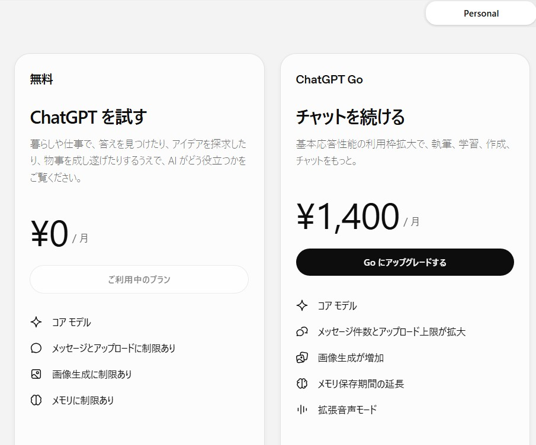

ChatGPTの無料版とGoの違いは？
有料プランにするメリット・デメリットを初心者向けにやさしく解説
ChatGPTを使っていると、「無料版のままでいいの？」「ChatGPT Goにすると何が変わるの？」と気になることがあります。
ChatGPTには無料で使えるプランがあり、さらに有料の「ChatGPT Go」などのプランも用意されています。でも、初心者にとっては「メッセージ数が増える」「メモリーが長くなる」と言われても、実際に何が便利なのか分かりにくいですよね。
この記事では、ChatGPTを仕事や学習に使いたい人向けに、無料版とChatGPT Goの違い、メリット・デメリット、そして最近よく聞く「AIのメモリー」について分かりやすく説明します。
※この記事は2026年8月時点の情報をもとにしています。ChatGPTの料金や利用できる機能、利用上限などは変更される場合があります。
まずは無料版とChatGPT Goの違い
現在のChatGPTには、無料で利用できるプランがあります。一方、ChatGPT Goは月額料金を支払って利用する有料プランです。

▲ 【画像1】無料版とGoプランの主な違い（2026年8月時点）
この記事で紹介している画面では、無料版：0円／月、ChatGPT Go：1,400円／月となっています。ただし、料金は地域や時期などによって変わる可能性があります。申し込むときは、実際のChatGPT画面に表示される料金を確認してください。
では、無料版とGoでは何が違うのでしょうか。大きな違いは、「無料で使えるかどうか」だけではありません。Goでは、無料版と比べて、ChatGPTをよりたくさん使いたい人向けに利用できる範囲が広くなっています。
無料版でもChatGPTはかなり使える
まず知っておきたいのは、無料版だから使い物にならない、というわけではないということです。
無料版でも、質問をしたり、文章を作ってもらったり、アイデアを考えてもらったりできます。例えば仕事なら、次のような使い方ができます。
- メールの文章を考えてもらう
- 長い文章を要約してもらう
- 文章を読みやすく直してもらう
- Excelの関数について質問する
- 会議のアイデアを出してもらう
- 分からない言葉を説明してもらう
「ちょっとAIを試してみたい」という人なら、まず無料版から始めても問題ありません。
ChatGPT Goにすると何が便利になる？
では、月額料金を払ってGoにするメリットは何でしょうか。現在の比較画面では、Goについて次のような違いが表示されています。
- メッセージ件数やアップロード上限が拡大
- 画像生成の利用量が増加
- メモリーの保存期間が延長
- 拡張音声モードが利用できる
- より多くの利用に対応
簡単に言えば、「ChatGPTを使える量や範囲を広げたい人向け」と考えると分かりやすいでしょう。
一番分かりやすい違いは「たくさん使える」
Goの大きなメリットの一つが、メッセージやファイルの利用上限が無料版より広くなることです。例えば、仕事でChatGPTを何度も使っていると、「もう少し質問したいのに利用制限にかかった」ということがありますが、Goではその利用できる範囲が広くなります。
そのため、「たまに使う人」より「毎日のように使う人」ほど、Goのメリットを感じやすくなります。
ファイルを使った作業や画像生成にも便利
文章だけでなくファイルをアップロードして「この資料を要約して」「この表を説明して」といった指示を出す場合も、Goなら利用上限を気にせず作業しやすくなります。また、「イラストを作って」といった画像生成の利用量も増えているため、画像をたくさん作りたい人にとってもGoは便利です。
「メモリー」が増えるってどういうこと？
最近ChatGPTの説明で見かける「メモリー」という言葉。実は、この言葉はパソコン初心者にとってかなり紛らわしいものです。なぜなら、パソコン本体にも「メモリ」があるからです。
同じ「メモリ」という言葉が使われていますが、役割はまったく違います。
「今、WordとExcelを使っています」というような現在の作業を一時的に置いておく場所。
「この人はこういうことを好む」といった情報を、今後の会話に役立てるために覚えておく仕組み。
ChatGPT Goの説明に「メモリー保存期間の延長」とあっても、お使いのパソコンのメモリ容量（8GBが16GBになる等）が増えるわけではありません。あくまでChatGPTの中での記憶力が良くなる、という意味です。
ChatGPT Goのメリット・デメリット
✅ Goのメリット
- ChatGPTをたくさん使える
- ファイルを使った作業がしやすい
- 画像生成をたくさん使える
- AIのメモリーをより活用できる
- 「制限」を気にする場面を減らせる
⚠️ Goのデメリット
- 毎月料金がかかる（1,400円〜）
- 使わなければメリットを感じにくい
- 回答が必ず正しくなるわけではない
有料プランにしたからといって、AIが絶対に間違えなくなるわけではありません。仕事で使う場合は、重要な数字、日付、会社名などは必ず人間が確認しましょう。
無料版とGo、どちらを選べばいい？
迷ったら、まずは無料版を使ってみるのがおすすめです。そして、「無料版では足りない」と感じるようになってからGoを考えるくらいでも十分です。
まとめ：使いこなすコツはプランより指示（プロンプト）
ChatGPTで一番大切なのは、プランよりも「どう指示を出すか」です。具体的に指示を出すコツを掴めば、無料版でも驚くほど役に立ちます。
まずは無料版でAIの使い方を覚え、機能に物足りなさを感じたら有料プランを検討する。この順番で、自分のペースでAIを味方につけていきましょう。